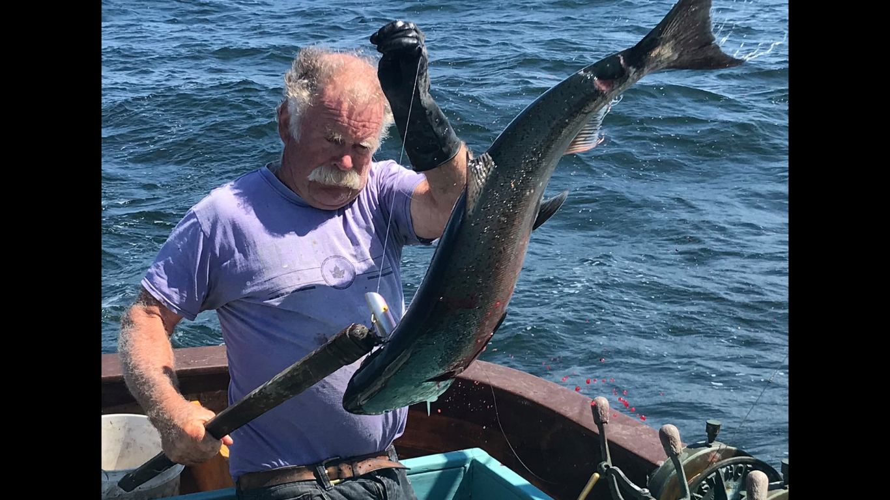
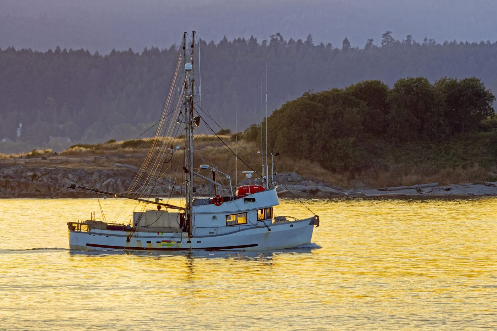
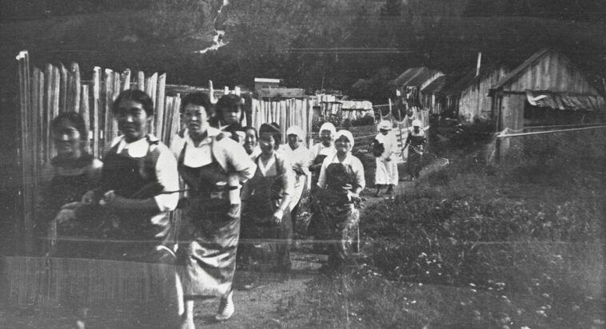

Mike Smith, the last salmon troller of Ucluelet
"At first light, Ucluelet Harbour is quiet now. There was a time when dawn meant engines firing and decks coming alive." What it takes to be the one still fishing.

Voices of the Coast
Not spokespeople. Neighbours — with decades on deck, generations in the cannery line, and skin in the game.

"At first light, Ucluelet Harbour is quiet now. There was a time when dawn meant engines firing and decks coming alive." What it takes to be the one still fishing.

The first shift begins on a dirt path at Kimsquit Inlet. A history of the coast's working women and men — and of what abundance once employed.

Kazamir L. Falconbridge — Councillor and Deputy Mayor of Port Clements, volunteer firefighter — on what North Coast weather does to best-laid plans.
"Natural resources will be better protected, food security will be advanced, Indigenous employment will increase, and the economy will stabilize." — Hereditary Chief Dr. Robert Joseph, on Indigenous Protected and Conserved Areas (via strongcoast.org)
The other locals
Orcas that share their catch. Otters that hold hands so they don't drift apart. We're not protecting scenery — we're keeping faith with neighbours who work the same waters.
Photos, video, or a story this coast should hear — from the deck, the dock, or the beach.
Submit photos & video